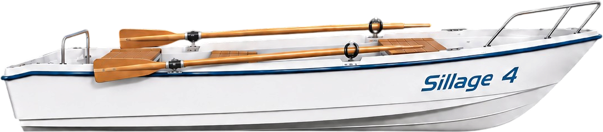
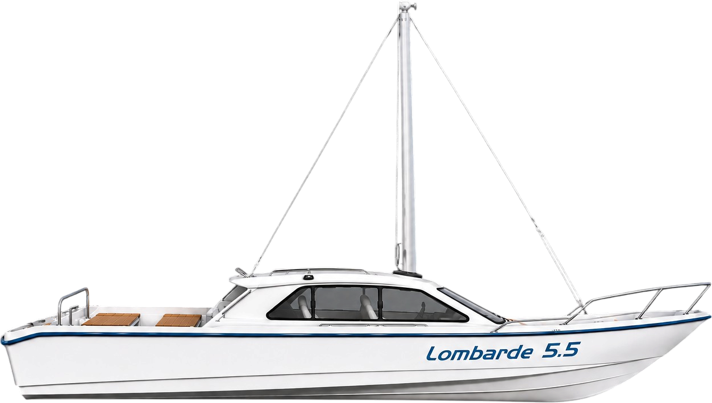
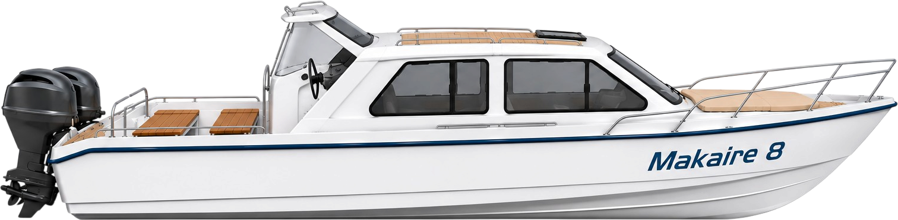
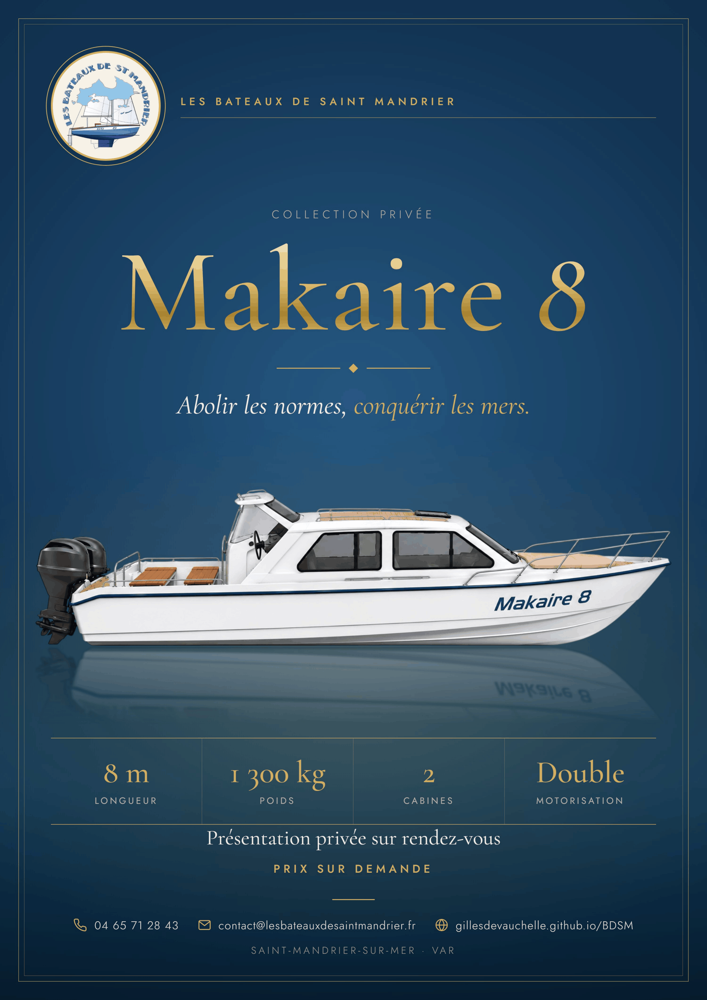

Toulon Boat Show
Port of Toulon, Var
Our biggest trade event of the year. Come and see the Lombarde 5.5 and the Makaire 8 on display, talk to our builders and discover our latest options.
Three boats built right here, for fishing and leisure.
“Abolir les normes, conquérir les mers”
Les bateaux de St Mandrier is a small boatyard based in St Mandrier sur Mer, in the south of France. We design and build three pleasure boats in our own workshop: a light fishing boat, a cosy cruiser and a comfortable big-game fishing boat.
Our philosophy is simple: a good boat should be easy to use, honest in its construction and made to last. We build every boat by hand, close to the water it will sail on, and we take the time to help each customer choose the model that fits what they want to do on the water.
Award winner. Laureate of the Prix Entreprise Féminine, La Garde 2026.
Certified. Entreprise qui rayonne localement (a business that shines locally), La Garde 2026.
Our brand film (French audio, English subtitles).


The simplest and lightest boat in the range. A fishing boat for the dedicated angler that is also great for leisure outings, and that can go where the water is shallow thanks to its very shallow draft.


Designed for cruising at sea, on a lake, an estuary or a canal. Easy to transport, it offers a cabin for two people and can be fitted with a galley. The stern has two benches and a platform.

The largest and most comfortable. Made for trips at sea or on a lake, and for big-game fishing. A forward cabin, a central cabin with a galley or lounge area, a helm station at the stern and a sun deck on the roof.

Makaire 8 poster. Click to view it full size.
Our latest short video, made for social networks.
Reel / TikTok (French audio)
The lightest boat in the range, in film.
Sillage 4 advert (French audio)
Warning: our boats are only built in St Mandrier. A manufacturer in Asia uses our name. Our company is an authorised distributor: every boat shown here is authentic.
Engraved on the hull, it starts with FR-SMD, our builder code, followed by 4 digits.
The builder's plate carries our name and the CE marking.
The “Coque signée Saint-Mandrier” certificate carries the same number.
Our biggest trade event of the year. Come and see the Lombarde 5.5 and the Makaire 8 on display, talk to our builders and discover our latest options.
A day of boat parades, local food and sea trials. Visitors can step aboard the Sillage 4 and try it out in the bay.
Un 8 mètres à cabine fermée, deux moteurs hors-bord et un pont en teck : le bateau des familles méditerranéennes qui veulent sortir toute l'année. Essayé un matin de mistral dans la rade de Toulon.
Read the article (PDF, in French) →Le programme « Nouveau Cap » déploie 155 000 € HT sur quatre trimestres : atelier nouvelle génération, bureaux modernisés et une journée « Chantier Ouvert » le 25 septembre 2027.
Read the press release (PDF, in French) →Pas de chronomètre ni de fiche technique : seulement la lumière, l'eau, et le temps qui passe autrement, entre les criques, le Faron et les îles d'Or.
Read the article (PDF, in French) →Des coques vendues en Asie du Sud-Est sous son nom et son logo : la PME varoise a choisi de contre-attaquer et de transformer l'affaire en argument commercial.
Read the article (PDF, in French) →Tell us what you want to do on the water, and we will help you choose the right model.
Write to us
Social networks